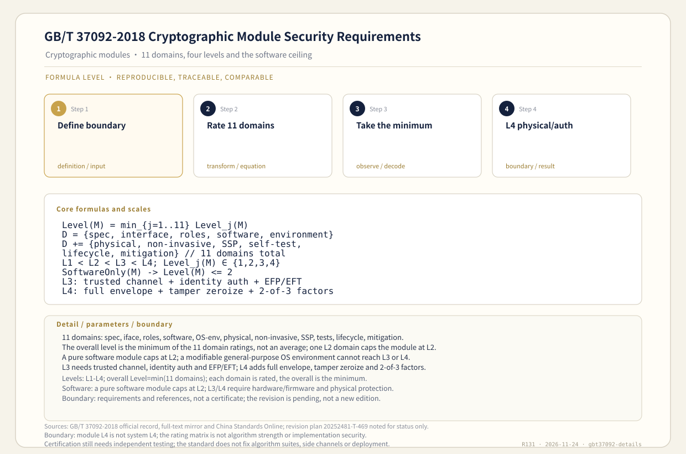
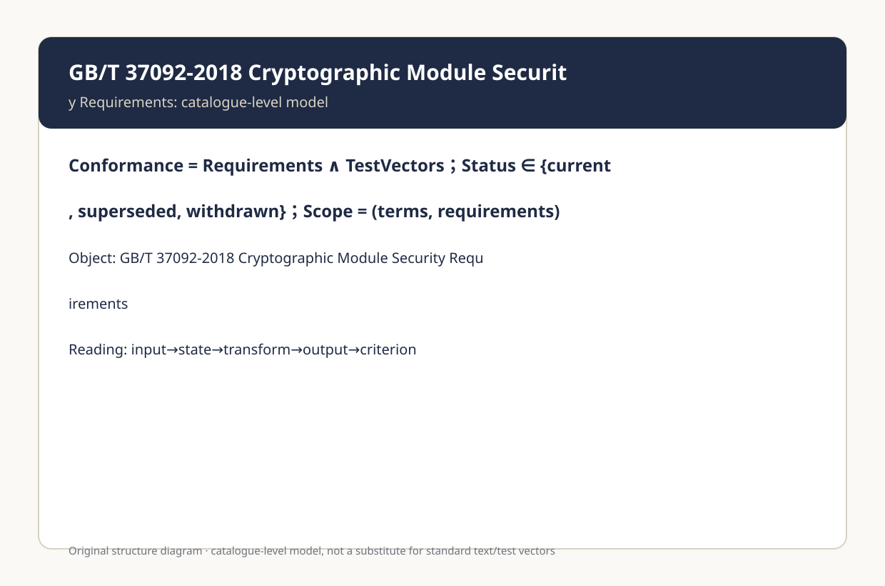

Principles
Standard: Security Requirements for Cryptographic Modules (密码模块安全要求). GB/T 37092-2018 breaks module security into 11 domains: specification, interfaces, roles/services/authentication, software/firmware, operating environment, physical, non-invasive, sensitive parameter management, self-tests, lifecycle assurance and mitigation of other attacks. Each domain is rated separately, and the overall level is the minimum of the 11 ratings, not an average. The levels rise cumulatively: L1 is the baseline; L2 adds tamper evidence and role-based authentication; L3 adds identity authentication, trusted channels, EFP/EFT and non-invasive mitigation evidence; L4 adds a full envelope, tamper-responsive zeroization, fault-injection protection and 2-of-3 multi-factor authentication. A pure software module caps at L2.

Why it matters
The minimum-domain formula prevents one strong area from masking a weak one. Module type, cryptographic boundary and operating environment decide which domains apply; the same product can change level when its boundary or mode changes.
The rating is a security-requirement matrix, not algorithm strength, a side-channel proof or product certification. It says which level a module reaches in which domains, not whether its algorithm remains secure.
Applications
Design starts by fixing the module type and boundary, then lists requirements and evidence per domain; assessment rates each domain and takes the minimum. Software modules must decide the L2 ceiling at architecture time, before discovering that the physical domains cannot reach L3/L4.
L3/L4 evidence focuses on trusted channels, identity authentication, EFP/EFT, full envelopes and tamper response, sensitive-parameter zeroization, and audit records that never contain sensitive parameters.
A shared name may belong to an algorithm, standard, event, person or term; this entry is responsible only for its catalogue binding and does not absorb adjacent records. If versions, regions or institutions define the name differently, the differences stay side by side.

Limits & attacks
Common errors include treating module L4 as system L4, averaging the 11 domains, treating self-tests as certification, ignoring the software ceiling, or treating a revision plan “in approval” as a published edition.
The standard does not fix algorithm suites and does not guarantee the absence of side channels; a module pass is not system security, and certification still needs an independent laboratory using the applicable scheme.
Conformance = Requirements ∧ TestVectors；Status ∈ {current, superseded, withdrawn}；Scope = (terms, requirements). Symbols are catalogue-level variables, not standard constants; parameters, test vectors and clauses remain with the registered source. The model states structural relations, not an implementation audit.
History
GB/T 37092-2018 was published on 2018-12-28 and took effect on 2019-07-01; the text has 52 pages. A revision was started on 2025-07-01 (plan 20252481-T-469, 16 months) and was still in approval on 2026-11-24, so the current edition remains 2018.
The standard references GB/T 15843, GB/T 32905/32907/32918 and other authentication, hash, block-cipher and public-key standards, but does not replace them, nor does it replace industry standards such as GM/T 0028.
Worked example & verification
Formal model and reproduction steps
[S=\min_i S_i,\quad S_i\in{\text{密钥强度},\text{分组安全},\text{实现安全}}]
Security Requirements for Cryptographic Modules: the registered public parameters, key material or randomness, and message are mapped through the stated transformation to an output checked against the registered criterion. The worked example is a structural reproduction, not a new test vector; parameter ranges, standard versions and implementation details remain source-bound.
References
- Wikipedia search entry for 密码模块安全要求. https://zh.wikipedia.org/w/index.php?search=%E5%AF%86%E7%A0%81%E6%A8%A1%E5%9D%97%E5%AE%89%E5%85%A8%E8%A6%81%E6%B1%82
- Handbook of Applied Cryptography (Menezes, van Oorschot, Vanstone). https://www.cacr.math.uwaterloo.ca/hac/